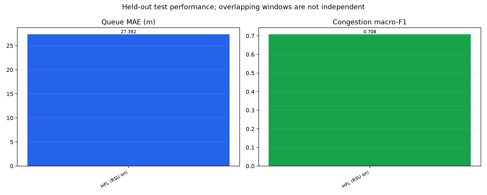
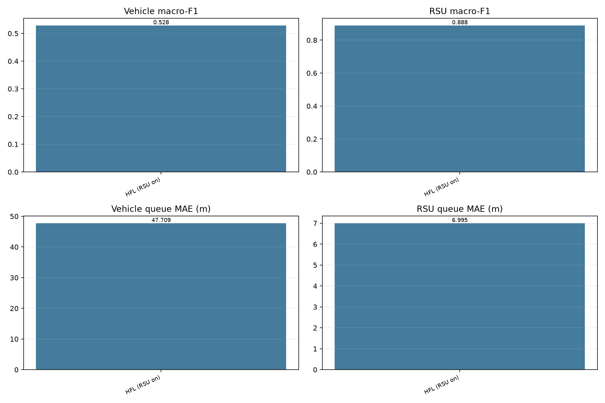
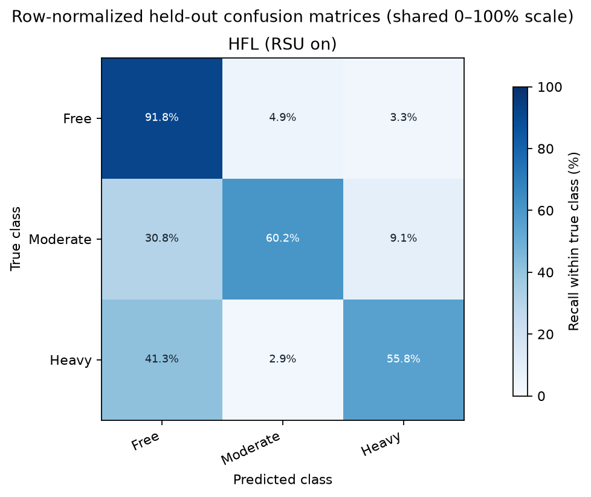
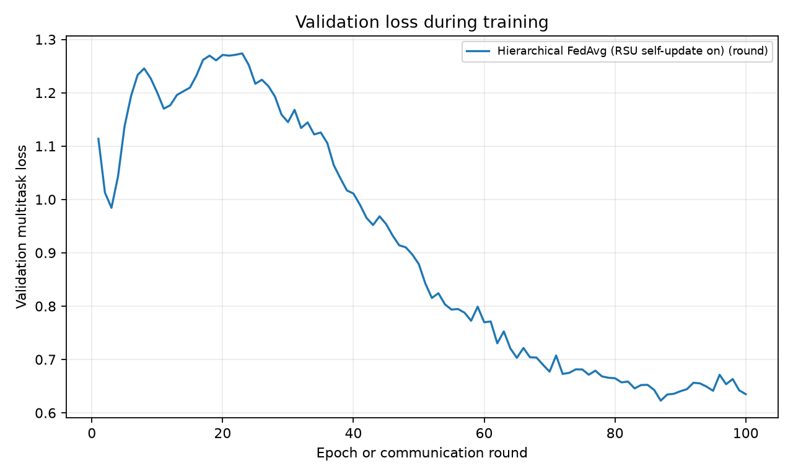
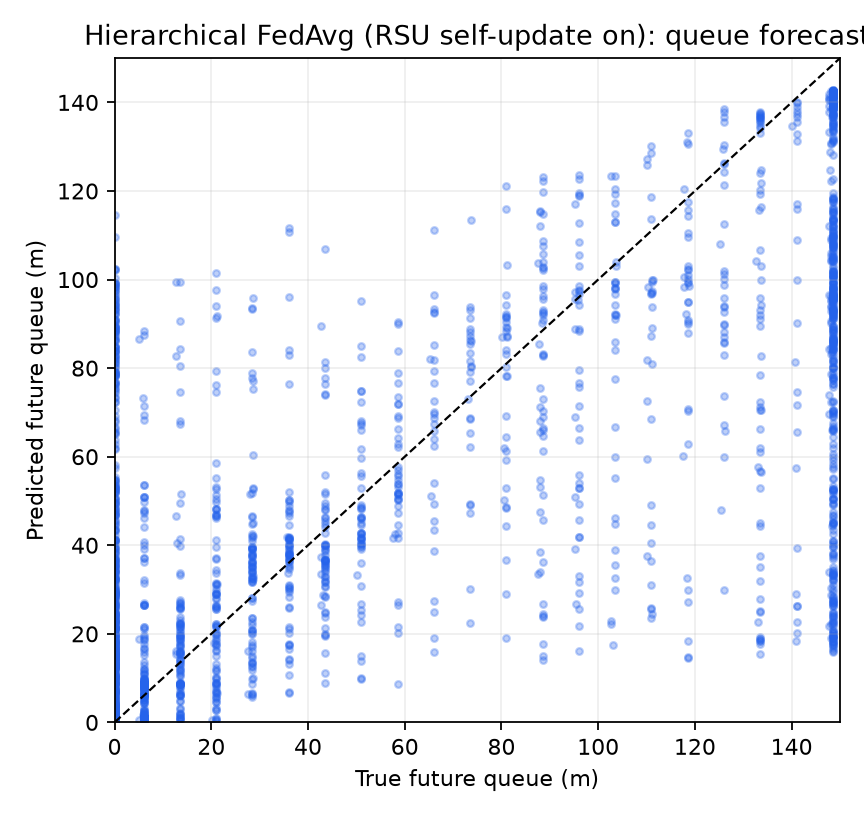

This report uses only the saved experiment run artifacts supplied to this command. Scores are descriptive; overlapping sliding windows are not independent samples.
| Method | Train windows | Test N | Queue MAE (m) | Queue RMSE (m) | Macro-F1 | Balanced accuracy |
|---|---|---|---|---|---|---|
| Hierarchical FedAvg (RSU self-update on) | 14,000 | 14,000 | 27.352 | 42.185 | 0.7078 | 0.6925 |





artifacts/phase2_compact_350_hfl_rsu_on_7000each/training_run; 40.3 min, 100 rounds, 14,000 training windows; manifest SHA-256 2efe03a811a2474b7f1246d921cb1ba1bdc0ed25003c8df500202fd123cac86fResults use one training seed. Held-out windows are nested within four SUMO simulation runs; they do not provide run-level confidence intervals. Different training budgets do not isolate architecture effects.